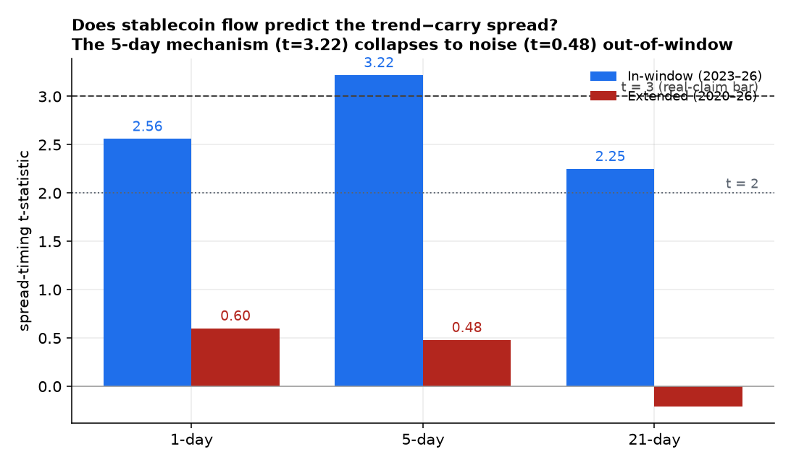
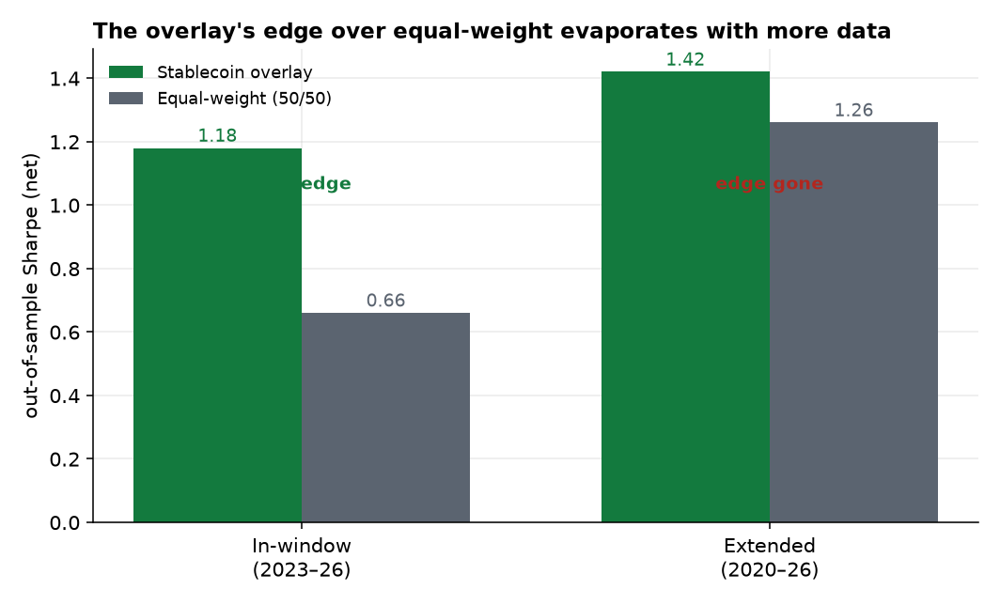
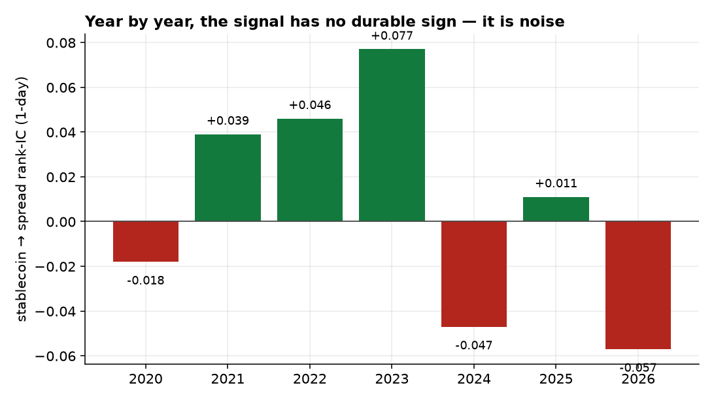

The first seven papers were written by hand. This one was found by a machine. We built an autonomous research loop — an LLM agent that rewrites a single strategy file, scores it through this program's rigor protocol, and iterates, in the spirit of Karpathy's autoresearch but pointed at market alpha instead of training loss. Crucially, the agent never sees or runs the scorer: a fixed harness owns the evaluation and the global trial count, so the deflated-Sharpe and PBO gates cannot be talked up. Across five campaigns it produced what every prior paper predicted — mostly honest rejections — and one genuinely promising, market-neutral lead worth a full study: an on-chain stablecoin-flow signal (from the free DeFiLlama API) that rotates the crypto carry and trend premia, posting an out-of-sample Sharpe of 1.18 vs 0.66 for the unconditioned book, with a significant five-day mechanism (rank-IC 0.17, t=3.22), passing deflated Sharpe (0.97) and PBO (0.11) over 2023–2026. It looked real. So we did the one test that matters: we backfilled the crypto sleeves to 2020 — roughly doubling the sample — and re-ran. The edge evaporated. The five-day mechanism collapsed from t=3.22 to t=0.48, its yearly information coefficient flipped sign at random, PBO failed (0.51), and the overlay's apparent t=3.75 turned out to be the sleeves' own base return, not the conditioning. The lead was a 2023–2026 window fit. The headline result of this paper is therefore not a signal but a method: an autonomous searcher that surfaces plausible edges, paired with an out-of-window test that kills the fits before a human can fall in love with them. Rigor, once again, was the alpha.
Seven papers of hand-built research converged on one uncomfortable regularity: nearly every spectacular backtest in this program was an artifact, and the work that paid was not finding signals but honestly pricing their costs, decay, and selection. If rigor is the real edge, then the natural next step is to automate the search and let the rigor do the rejecting — at machine scale, without the human attachment that makes a 1.2-Sharpe backtest so hard to throw away.
So we built one. Modeled on Andrej Karpathy's autoresearch [1] — where an LLM agent edits one file, runs a fixed-budget experiment, keeps or discards, and repeats — our auto-researcher swaps "minimize validation loss" for "find net-of-cost, out-of-sample, market-neutral alpha." This paper is its first campaign report. It tests four hypotheses:
The system has three moving parts, deliberately separated so the search cannot game its own grade. A human-edited program.md states the objective, the data menu, and — most importantly — the program's hard-won list of dead ends (directional prediction fails; smooth-stream Sharpes are artifacts; long-only books are market beta, not alpha). The agent edits exactly one file, factor.py, to express a single hypothesis as a net-of-cost return series. And a fixed harness — which the agent never reads or runs — scores that series through the same gauntlet every paper here had to clear: the mandatory prediction-diversity check, purged / embargoed walk-forward, non-overlapping t-statistics, deflated Sharpe, and PBO via CSCV [2][3].
One design choice is the whole ballgame. In Karpathy's setup the agent runs its own evaluation, which is safe because validation loss is honest. Market backtests are not: an agent that can re-score is just running multiple comparisons, and the False Strategy Theorem guarantees it will manufacture a winner from noise. So here the runner, not the agent, owns the scorer and the global trial counter. Deflated Sharpe is deflated against every factor ever tried in a campaign, the bar rises with every turn, and the agent's only lever is the quality of its next idea. The harness also rejects two failure modes a naive backtester rewards: a near-constant return stream (the smooth-Sharpe trap that sank an earlier in-house system) and a net-directional book across many instruments (market beta wearing an alpha costume). The agent ran on a frontier model and, when its quota ran out, on a local open-source model — the loop is model-agnostic.
Across five campaigns — conditioning the surviving premia, an open-ended sweep, equity point-in-time fundamentals (SEC EDGAR), futures positioning (CFTC COT), and on-chain data (DeFiLlama) — the loop returned what Papers 1–7 would predict: zero passes, a pile of characterized negatives, and the beta gate correctly killing every long-only equity tilt that a raw Sharpe would have flattered. One lead stood out, and it came from data this program had never used: DeFiLlama's free, keyless on-chain feeds — total stablecoin supply, DeFi total-value-locked, and protocol fees.
The agent's hypothesis is mechanism-driven, not data-mined. Stablecoin minting is fresh dollars entering crypto; contraction is capital leaving. Expanding on-chain liquidity should favor trend continuation as new money chases winners, while contraction should favor the funding-carry sleeve, where crowded leverage unwinds and financing premia are paid. So it built a market-neutral overlay that keeps the crypto book fully invested but rotates between the carry and trend sleeves (Papers 2 and 4) on a lagged, standardized stablecoin-liquidity score — relative sleeve selection, never a directional exposure bet. No look-ahead: every conditioner is lagged a day and standardized against trailing history.
Over 2023–2026 (~1,260 days) the overlay is, by every gate, a promising market-neutral edge. It roughly doubles the out-of-sample Sharpe — 1.18 versus 0.66 for the unconditioned 50/50 book — and it does so robustly: all eighteen configurations in a pre-registered grid are positive (0.97–1.19), deflated Sharpe is 0.97, and PBO is 0.11. Most convincingly, the mechanism is independently significant: the lagged stablecoin score predicts the five-day trend-minus-carry return spread with a rank-IC of 0.17 at t=3.22 (Figure 1, blue) — above this program's demanding t>3 bar. The only blemish is the overlay's own daily t of 2.21: a 1.2-Sharpe strategy simply cannot clear t>3 in three and a half years. That is a sample-length problem, not a strategy problem — which is exactly what makes it worth more data.

So we ran the one test that separates an edge from a fit. We backfilled the Binance USD-M funding and spot panels to 2020 from the public data archive, rebuilt the carry and trend sleeves over the full 2,359-day (2020–2026) window — nearly double the data — and re-ran the identical study. The lead did not survive (Table 1). The five-day mechanism collapsed from t=3.22 to t=0.48; its year-by-year information coefficient flips sign essentially at random (Figure 3); PBO failed at 0.51; and while the overlay's daily t rose to 3.75, that significance is now the crypto sleeves' own base return, not the conditioning — because the overlay only beats equal-weight by 1.42 to 1.26 over the long window, versus the 1.18-to-0.66 chasm it showed in-sample (Figure 2). Stripped of the favorable window, the conditioning adds almost nothing.
| Metric | In-window 2023–26 | Extended 2020–26 |
|---|---|---|
| Days | 1,263 | 2,359 |
| Mechanism, 5-day t | 3.22 | 0.48 |
| Overlay OOS Sharpe | 1.18 | 1.42 |
| Equal-weight OOS Sharpe | 0.66 | 1.26 |
| Overlay edge over EW | +0.52 | +0.16 |
| PBO (want < 0.5) | 0.11 | 0.51 |
| Verdict | promising | a fit |


The honest headline is a negative, and that is the point. The most promising lead an autonomous searcher produced — market-neutral, mechanism-backed, robust to its own parameter grid, non-decaying within sample — was a fit, and a single out-of-window test said so unambiguously. A human researcher, having watched the loop discover a clean on-chain story with a t=3.22 mechanism, would have been sorely tempted to trade it. The discipline of doubling the sample first is what stood between a plausible narrative and a live loss.
An autonomous loop is a faster way to generate hypotheses, not a shortcut around rigor. It made the search cheap; it made the rejection mandatory. The system's deliverable is not the edge it found but the fit it killed — and the fact that the killing was automatic, gated, and honest.
Two findings generalize beyond this one signal. First, the architecture matters: because the agent could not run or see the scorer, and the deflation counted every trial it had ever made, the search could not converge on a noise-mined winner — it had to keep proposing real ideas, and the gate kept saying no until a genuinely interesting one appeared. Second, in-sample significance is not robustness, even when it is deflated, walk-forward, and mechanism-confirmed. A t=3.22 five-day mechanism with PBO 0.11 is exactly the kind of result that survives every test you can run inside a window and still fails the moment you widen it. The cheapest, most decisive rigor test in quantitative research remains the oldest: get more data and look again. This program will keep the auto-researcher running — but it will trust only what survives the window it was not born in.
The sample is still short. Even extended, the crypto sleeves span 2020–2026 with a thin pre-2023 cross-section; some sleeves backfill only to their listing, and 2020–2022 is a single bull-then-bear regime. A genuine on-chain edge could exist at a horizon or in a sub-universe we did not test — absence of evidence here is not proof of its absence. The autonomous search is itself a multiple-comparisons machine. Global deflation guards within a campaign, but cross-campaign and within-turn exploration are only partly accounted for; the honest reading is that the bar should be higher, not lower, for anything a tireless loop surfaces. The local-model runs were weaker. When the frontier-model quota ran out, the open-source fallback build-failed more often and leaned toward beta tilts the gate caught — useful breadth, lower quality. The forward frontier. The most genuinely un-mined data this program owns is the forward Deribit options surface it now collects every six hours; pointing the auto-researcher at a true options-execution test, as it matures, is the natural next campaign. The method is the contribution; the next edge, if there is one, will have to clear the same widening window.